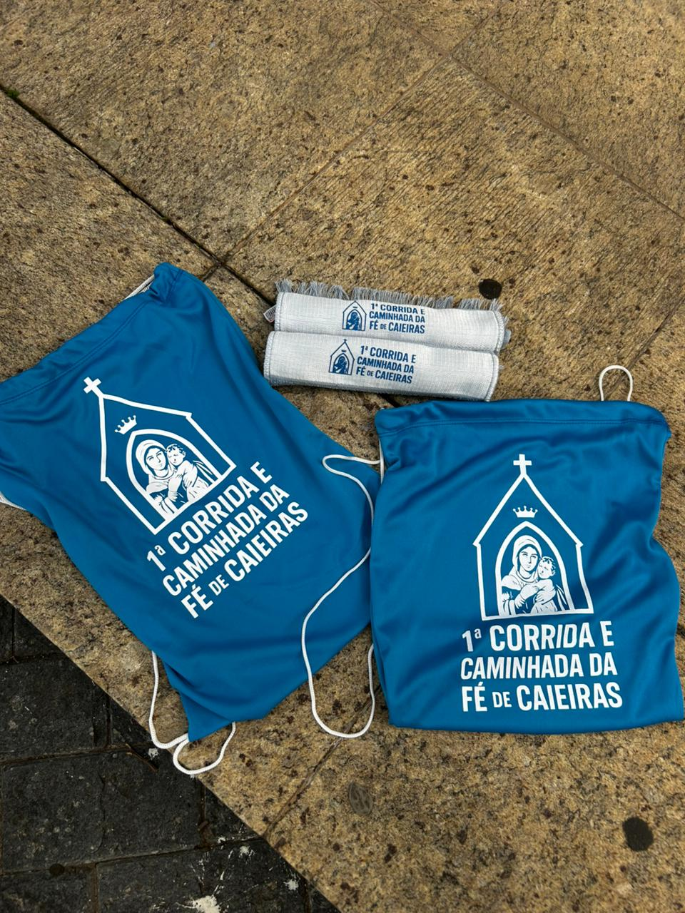
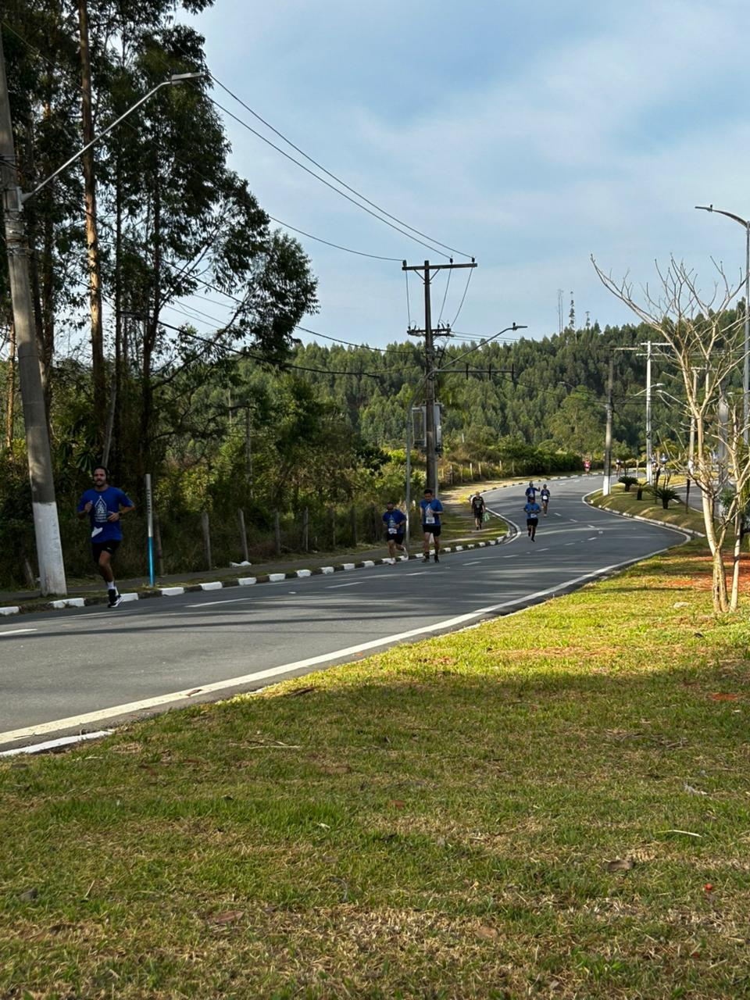
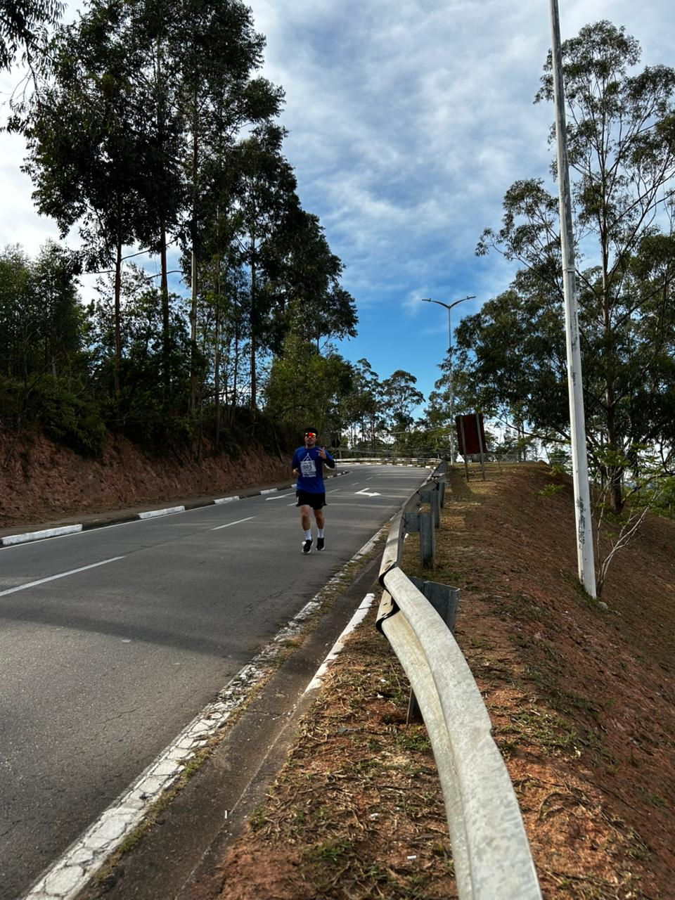

Nossa Primeira Caminhada e Corrida-Fé Pela Saúde!
Prepare-se para mais caminhada e corrida, próximo grande encontro! Reuniremos famílias, amigos e vizinhos para mais um passo importante contra o sedentarismo. Será um dia repleto de sorrisos, superação e a prova de que juntos somos mais fortes. A participação é gratuita!
Inscreva-se no Grupo!


